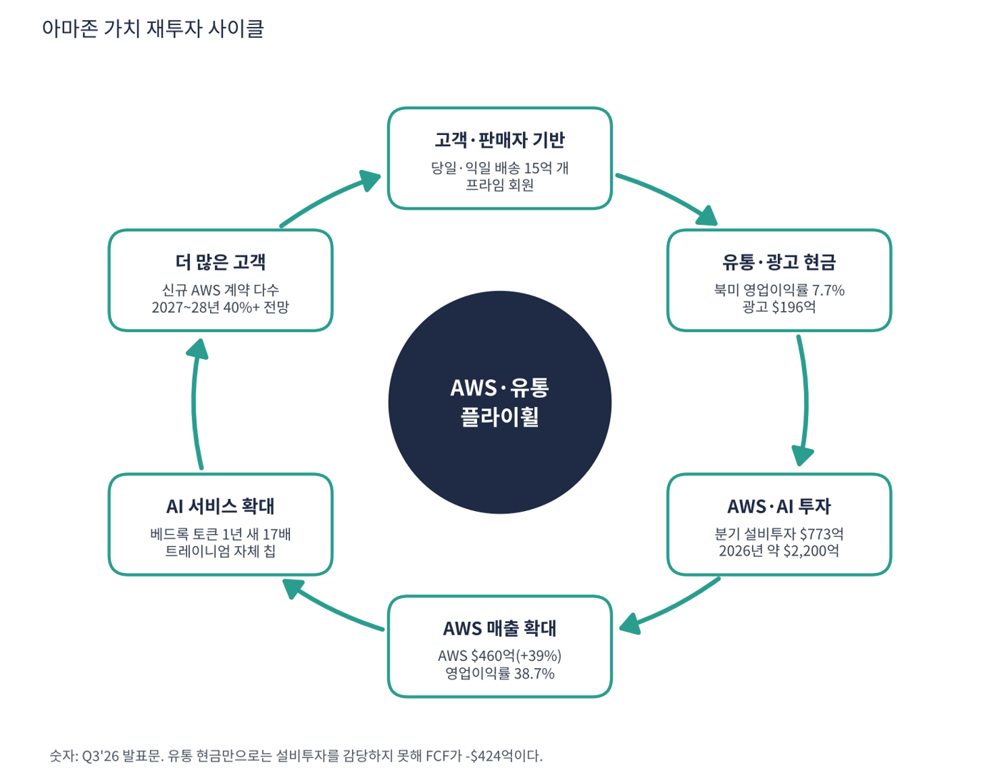

아마존은 세계 최대 온라인 유통·물류 회사이자 세계 최대 클라우드(AWS) 회사다. 여기에 광고(스폰서 상품·프라임 비디오), 구독(프라임), 식료품·약국·위성인터넷(아마존 레오)·자율주행(죽스)까지 넓혔다. 겉은 유통 회사지만 매출의 23%인 AWS가 영업이익의 63%를 번다.
| 항목 | 내용 |
|---|---|
| 종목 | Amazon.com, Inc. (AMZN) · NASDAQ · 인터넷 유통·클라우드 · 1994년 설립 · 본사 시애틀 |
| 시가총액 | 약 $2조 8,040억 · TTM PER 21.0배(앤스로픽 지분 평가이익 포함) · 배당 없음 (트레이딩뷰, 11/6 종가 $259.30) |
| 최근 분기(Q3'26) | 매출 $2,019억(+12%, 프라임데이 시기 이동 제외 시 약 +16%), 영업이익 $281억(+61%), 순이익 $207억, EPS $1.89 |
| Q4'26 가이던스 | 매출 $2,400~2,470억(+12~16%), 영업이익 $285~335억(전년 $250억), 광고 성장 10%대 후반 |
| 2026년 설비투자 | 현금 기준 약 $2,200억 (회사 발표) |
| 다음 실적 | Q4'26 실적: 2027년 2월 초 발표 예상 (콜 원고는 공개하지 않음) |
| 직책 | 인물 | 역할·특징 |
|---|---|---|
| 사장 겸 CEO | 앤디 재시 | AWS를 키운 인물로 2021년 CEO 취임. AWS 2027·2028년 40%+ 성장 전망을 직접 제시하고 "매출 1조 달러 사업이 5~10년 안에 두 개"라고 말함 |
경영 스타일: '지금의 현금을 포기하고 AI 인프라를 먼저 깐다'. 재시 CEO는 유통 점유율을 늘리며 마진도 개선하겠다고 하면서, 동시에 AWS 설비투자를 세 빅테크 중 가장 공격적으로 늘렸다. Q3'26 분기 설비 구매가 $773억이고, 12개월 설비 구매가 약 $950억 늘어 FCF가 +$148억에서 -$424억으로 뒤집혔다. 회사는 증가분이 주로 AI 투자라고 밝혔다. 번 돈 이상으로 투자하는 결정이다.
AWS는 자체 AI 칩 트레이니엄과 그래비톤, 오픈AI·앤스로픽·문샷 등 경쟁 모델을 모두 올린 베드록, 코딩 에이전트 키로를 갖췄다. 물류는 당일·익일 배송망과 로봇 자동화가 해자다.
10-K의 고정 문구다. 행동에서 읽히는 방향은 물류·위성·자율주행(물리 세계)과 클라우드·AI(디지털 세계)의 인프라를 동시에 소유하고 그 위를 지나가는 거래에서 수수료를 받는 '인프라 임대업자'다.
| 분기 | 매출 | YoY | 영업이익 | 이익률 | 순이익 | EPS | 영업현금 | 설비 구매 | 단순 FCF | AWS 성장 | 특이 사항 |
|---|---|---|---|---|---|---|---|---|---|---|---|
| 24.4Q | $187.8B | +10% | $21.2B | 11.3% | $20.0B | $1.86 | $45.6B | $27.8B | $17.8B | +19% | |
| 25.1Q | $155.7B | +9% | $18.4B | 11.8% | $17.1B | $1.59 | $17.0B | $25.0B | $-8.0B | +17% | AWS 성장 17%로 둔화 |
| 25.2Q | $167.7B | +13% | $19.2B | 11.4% | $18.2B | $1.68 | $32.5B | $32.2B | $0.3B | +17.5% | AWS 마진 최저(33%) |
| 25.3Q | $180.2B | +13% | $17.4B | 9.7% | $21.2B | $1.95 | $35.5B | $35.1B | $0.4B | +20% | FTC 합의금·앤스로픽 이익 $9.5B |
| 25.4Q | $213.4B | +14% | $25.0B | 11.7% | $21.2B | $1.95 | $54.5B | $39.5B | $15.0B | +24% | 특별 비용 $2.4B |
| 26.1Q | $181.5B | +17% | $23.9B | 13.2% | $30.3B | $2.78 | $26.0B | $44.2B | $-18.2B | +28% | 앤스로픽 이익 $16.8B |
| 26.2Q | $200.6B | +20% | $27.5B | 13.7% | $62.6B | $5.75 | $45.4B | $54.2B | $-8.8B | +37% | 프라임데이 앞당김·영업외수익 $53.4B |
| 26.3Q | $201.9B | +12% | $28.1B | 13.9% | $20.7B | $1.89 | $42.4B | $77.3B | $-34.9B | +39% | 설비투자 $77B, AWS +39% |


흐름 요약: 순이익보다 영업이익을 봐야 한다. 2026년 2분기 순이익 $626억은 대부분 앤스로픽 지분 평가이익이고, 사업 실력인 영업이익은 $174억 → $281억으로 올랐다(이익률 9.7% → 13.9%). AWS 성장률은 17% → 39%로 두 배 넘게 빨라졌다. 대신 설비 구매는 분기 $278억 → $773억으로 늘어 최근 12개월 영업현금($1,683억, +29%)이 사상 최대인데도 FCF가 -$424억(회사 정의)이다. 단순 FCF(영업현금 − 설비 구매)는 Q3'26 -$348억이다.
| 매출원 | 돈을 버는 방식 | Q3'26 매출 | 비중 | YoY |
|---|---|---|---|---|
| 온라인 스토어 | 직접 사서 파는 상품(1P)과 디지털 미디어. 마진이 가장 얇음 | $685억 | 34% | +2% |
| 3P 판매자 서비스 | 외부 판매자 판매 수수료·풀필먼트(FBA) 수수료 | $465억 | 23% | +9% |
| AWS | 서버·스토리지·데이터베이스·AI(베드록·트레이니엄) 사용료 | $460억 | 23% | +39% |
| 광고 | 스폰서 상품, 프라임 비디오·트위치 광고, 스포츠 중계 광고 | $196억 | 10% | +11% |
| 구독 | 프라임 회원비, 오디블, 킨들 언리미티드 | $140억 | 7% | +11% |
| 오프라인·기타 | 홀푸드·아마존 프레시 매장, 기기 | $74억 | 4% | +2% |

| 부문 영업이익 | Q3'26 영업이익 | 이익률 | 해석 |
|---|---|---|---|
| 북미 | $87억 | 7.7% | 1년 전 4.5%(FTC 합의 포함). 광고·3P 수수료 비중이 커지며 구조적 개선 |
| 해외 | $16억 | 3.7% | 적자에서 흑자 사업으로, 이익 기여는 작음 |
| AWS | $178억 | 38.7% | 회사 영업이익의 63%, 이익의 엔진 |

플라이휠 구조: 유통(1P+3P)이 매출의 약 60%지만 이익률은 한 자릿수다. 유통이 모은 구매자·판매자가 고마진 광고, 3P 수수료, 프라임 구독을 만든다. 별개의 엔진 AWS가 이익의 63%를 벌고, 유통의 현금과 AWS의 현금이 다시 AI 인프라로 들어간다. Q3'26 광고·온라인 스토어 성장률은 프라임데이가 Q2로 옮겨간 영향(전체 약 4%p)으로 낮아졌다.
아마존이 10-K 첫머리에 내거는 목표는 "지구에서 가장 고객 중심적인 회사"다. 최근 행동에서 읽히는 방향은 세 가지다.
| 축 | 내용 |
|---|---|
| 가장 빠른 물류 인프라 | Q3'26 프라임 회원에게 15억 개 이상 당일·익일 배송, '아마존 나우' 450개 도시(주문량 1년 새 10배), 식료품이 판매 수량의 절반, 약국 350개 도시 3시간 배송 |
| AI 인프라의 선택지 백화점 | 베드록에 오픈AI·앤스로픽·문샷 등 경쟁 모델을 모두 올리고 자체 칩 트레이니엄도 키움. 메타·엔비디아·오픈AI·오라클 등과 신규 AWS 계약 |
| 장기 옵션 | 아마존 레오(위성인터넷, AT&T 계약), 죽스(로보택시, 12개 도시), 알렉사 포 쇼핑(12개월 4억 명 이상 사용) |


위: 트레이딩뷰 주봉 데이터로 재구성(10·20·40주선). 아래: 트레이딩뷰 공개 차트 일봉 캡처(작도 숨김, 이동평균선·볼린저밴드만 표시).
| 이동평균 | 값 | 종가 대비 | 해석 |
|---|---|---|---|
| 5일선 | $256.40 | +1.1% | 10/30 급락 후 회복 |
| 20일선 | $254.30 | +2.0% | 20·50·100일선이 $252~254에 겹침 |
| 50일선 | $254.00 | +2.1% | 방향성 없음 |
| 100일선 | $252.50 | +2.7% | |
| 200일선 | $243.90 | +6.3% | 완만한 상승. 장기 추세는 위쪽 |
모든 이동평균선이 주가 아래 $244~256의 좁은 구간에 모여 있다. 이런 '이평선 수렴'은 보통 큰 방향성 움직임을 앞둔 상태다. 실적은 좋아지는데 주가는 1년째 $229~287 박스권이다.
| 규칙 | 기준 | 현재 값 | 신호 |
|---|---|---|---|
| 장기 추세 필터 | 종가 vs 200일선 | $259.30 > $243.90 | 매수 |
| 중장기 교차 | 50일선 vs 200일선 | $254.00 > $243.90 | 매수 |
| 단기 교차 | 20일선 vs 50일선 | $254.30 > $254.00 | 매수 |
| 돈키언 채널 | 55일 고가 $273.20 / 저가 $229.40 | 중간값 $251.30 위 | 매수 |
| 1개월 모멘텀 | 21거래일 수익률 | +2.1% (기준 $254.00) | 매수 |
| 3개월 모멘텀 | 63거래일 수익률 | -6.8% (기준 $278.20) | 매도 |
| 6개월 모멘텀 | 126거래일 수익률 | -4.9% (기준 $272.70) | 매도 |
| 12개월 모멘텀 | 252거래일 수익률 | +3.6% (기준 $250.20) | 매수 |
| 종합 (8개 평균) | +0.50 | 매수 우위 |
해석: 8개 신호 중 6개 매수, 2개 매도(3·6개월 모멘텀)다. 장기 신호는 롱이지만 3·6개월 모멘텀이 마이너스라 상쇄된다. 박스를 벗어나는 순간 신호가 한쪽으로 쏠려 추세 자금이 유입·이탈할 여지가 크다. 60일 변동성 연 31.2%, 14일 ATR $9.00 (3.5%).
| 가격 | 무엇이 바뀌나 | 의미 |
|---|---|---|
| $287 | 52주 신고가(2026.8.3) | 1년 박스 완전 돌파 |
| $273 ~ 278 | 55일 신고가 + 6개월($272.7)·3개월($278.1) 모멘텀 플러스 | 8개 신호 모두 매수 |
| $250 ~ 254 | 1개월($254.1)·12개월($250.2) 모멘텀 마이너스 + 이평선 이탈 | 매도 우위로 기욺 |
| $229 | 55일 신저가 | 박스 하단 이탈, 추세 자금 매도 |
| 구분 | 가격대 | 근거 |
|---|---|---|
| 저항 2 | $278 ~ 287 | 8월 고점권, 52주 최고가 |
| 저항 1 | $272 ~ 273 | 11/5 고점, 55일 최고가 |
| 지지 1 | $244 ~ 254 | 이평선 밀집대(20·50·100·200일선) |
| 지지 2 | $229 | 10/30 실적 후 저점, 55일 최저가 |
| 지지 3 | $196 ~ 200 | 2026년 2~3월 저점 |
박스권($244~273) 안에서 방향을 고르는 중이고 펀더멘털은 위쪽을 가리킨다. $250~254 이평선 밀집대에서 지지를 확인하면 계획 비중의 40%를 진입하고(진입 $252·손절 $242 기준 손익비 1:2.1~1:3.5), $273~278 종가 돌파 시 나머지 60%를 추가한다. 1차 $273에서 40%, 2차 $287에서 40% 익절하고 나머지는 20일선 기준으로 추세를 따라간다. $244 종가 이탈은 200일선 이탈이라 보유분을 정리하고, $229는 추세 자금 매도 신호다.
| 악재 요인 | 내용 | 강도 |
|---|---|---|
| FCF 마이너스·투자 부담 | 분기 설비투자 $773억, 2026년 약 $2,200억. 수요가 예상보다 일찍 꺾이면 감가상각 부담이 가장 크게 남음 | 높음 |
| 앤스로픽 평가손익 | Q1·Q2'26 순이익의 상당 부분이 지분 평가이익. 지분 가치 하락 시 순이익을 깎을 수 있음 | 중간 |
| AWS 공급 제약·마진 | 수요가 공급을 초과. 감가상각 증가 속에서 AWS 이익률 38~39%를 지켜야 함 | 중간 |
| 비용 압박 | 물류 직원 최저 시급 $20, 배송 속도 투자, 연말 30만 명 이상 채용 | 중간 |
| 성장률 왜곡 | 2026년 프라임데이가 Q2로 이동해 Q2 성장률은 부풀고 Q3는 약 4%p 낮아짐. 분기 비교 주의 | 참고 |
| 티커 | 회사 | 시가총액 | PER(TTM) | PEG | P/S | EPS 성장(YoY) |
|---|---|---|---|---|---|---|
| AMZN | 아마존 | $2,804B | 21.0배 | 0.27 | 3.45배 | +75% |
| MSFT | 마이크로소프트 | $3,940B | 27.7배 | 0.74 | 11.09배 | +36% |
| GOOGL | 알파벳 | $3,476B | 14.9배 | 0.17 | 7.39배 | +89% |
| WMT | 월마트 | $996B | 45.5배 | 11.00 | 1.36배 | +4% |
| COST | 코스트코 | $467B | 50.8배 | 3.58 | 1.52배 | +14% |
| BABA | 알리바바 | $276B | 25.8배 | – | 1.84배 | -50% |
알파벳·아마존 PER·PEG는 보유 지분 평가이익이 들어간 값이다. 알리바바는 EPS가 -50% 감소했다.
비교 결론: 아마존 PER 21.0배는 유통 대형주(월마트 45.5배, 코스트코 50.8배)보다 훨씬 낮고, 클라우드 경쟁사(마이크로소프트 27.7배, 알파벳 14.9배)와는 중간이다. 다만 표시 PEG 0.27은 평가이익 착시이고 영업 기준 약 0.87이다. 유통 회사 PER이 아니라 클라우드 회사 PER로 평가받기 시작한 구간이라는 점이 주가의 재평가 포인트다.
아마존은 적자 기업이 아니다(영업이익 최근 4분기 $1,045억). 그러나 설비투자가 영업현금을 넘어 FCF가 -$424억이라 현금이 투자를 얼마나 버티는지를 점검했다.
| 지표 | 값 | 계산·출처 | 해석 |
|---|---|---|---|
| 최근 12개월 영업현금 | $1,683억 | 회사 발표(+29%) | 사상 최대 |
| 잉여현금흐름(FCF, 회사 정의) | -$424억 | 트레이딩뷰는 -$469억 | 1년 전 +$148억에서 역전 |
| Q3'26 단일 분기 단순 FCF | -$348억 | 영업현금 $424억 − 설비 구매 $773억 | 분기 설비투자가 급증 |
| 현금·유가증권 | $1,172억 | 트레이딩뷰 최근 분기 | 앤스로픽 등 보유 지분은 별도 |
| 총부채 | $2,947억 | 트레이딩뷰(리스 부채 포함으로 추정) | 순부채 약 $1,775억 |
| 시나리오 | 연간 FCF | 현금·유가증권 $1,172억이 버티는 기간 |
|---|---|---|
| A. 최근 12개월 속도 유지 | -$424억 | 약 2.8년 |
| B. 2026년 설비투자 $2,200억, 영업현금 $1,683억 유지 (가정) | -$517억 | 약 2.3년 |
| C. Q3'26 단일 분기 속도 유지 (가정) | -$1,392억 (-$348억 × 4) | 약 0.8년 |
시나리오 B·C는 내가 둔 가정이다. 현실에서는 영업현금이 계속 늘고 회사채 조달이 가능해 이 기간이 길어진다.
판단: 현금이 바닥날 위험은 작다. 영업현금이 연 29%씩 늘고 있고 회사채로 조달할 수 있기 때문이다. 다만 FCF가 마이너스인 한 배당·자사주 없이 부채가 늘고, 시장은 성장보다 현금흐름을 보고 있다. 1년째 박스권인 이유다.
| 기준 | 매출 | P/S | 비고 |
|---|---|---|---|
| 트레이딩뷰 표시값(11/6 환산) | – | 3.4배 | TTM 기준 |
| 최근 4분기(TTM) | $7,975억 | 3.5배 | 시총 $2.804조 ÷ $7,975억 |
| 동종 유통 | – | – | 월마트 1.4, 코스트코 1.5, 알리바바 1.8 |
| 동종 클라우드 | – | – | 알파벳 7.4, 마이크로소프트 11.1 |
해석: 아마존 P/S 3.5배는 유통 회사(1.4~1.8)와 클라우드 회사(7~11) 사이다. 유통이 매출의 대부분(약 60%)이고 클라우드가 이익의 63%라는 사업 구성과 맞는 위치다. AWS 비중이 커질수록 P/S는 클라우드 쪽으로 올라갈 여지가 있다.
| 지표 | 값 | 판정 |
|---|---|---|
| EBITDA (트레이딩뷰, TTM) | $1,856억 | 흑자 |
| 영업이익 (TTM) | $1,045억 | 25.4Q~26.3Q 합계 |
| 영업이익 → EBITDA 차이 | 약 $811억 | 감가상각·상각비(추정). 설비투자 확대로 계속 증가 |
| EBITDA 마진 | 23.3% | $1,856억 ÷ $7,975억 |
| 순부채 / EBITDA | 약 1.0배 | 순부채 $1,775억(리스 포함 추정) ÷ $1,856억 |
EBITDA가 영업이익의 1.8배다. 감가상각이 이익의 상당 부분을 먹고 있다는 뜻이며, 분기 $770억 설비투자가 계속되면 몇 년 뒤 영업이익이 더 눌릴 수 있다.
| 방식 | PER | EPS 성장률 | PEG | 판정 |
|---|---|---|---|---|
| 트레이딩뷰 (TTM, 11/6 환산) | 21.0배 | +74.8% | 0.27 | 적극 매수 |
| 직접 계산 (SEC 분기 EPS 합계) | 21.0배 ($259.3 ÷ $12.37) | +74.7% ($7.08 → $12.37) | 0.28 | 적극 매수 |
| 영업이익 기준 (지분 평가이익 제외, 추정) | 약 32.3배 ($259.3 ÷ 약 $8.02) | 약 +37.1% (영업이익 TTM $762억 → $1,045억) | 약 0.87 | 투자 적격 |
| 보수적 (성장률 20% 가정) | 약 32.3배 | +20% | 1.6 | 기준 초과 |
판정: 표시 PEG 0.27은 앤스로픽 평가이익이 만든 착시다. EPS가 75% 늘었지만 1·2분기 순이익에 평가이익이 대량 들어갔다. 영업이익 기준으로 다시 계산하면 PER 약 32배, 성장률 약 37%로 PEG 약 0.87 — 투자 적격이지만 적극 매수 기준(0.5)에는 못 미친다. (주당 영업이익 $8.02는 세율 17% 가정의 내 추정치다.) 성장률이 20%로 둔화되면 PEG 1.6으로 기준을 넘는다. AWS +39%가 분모를 지켜 주는지가 관건이다.

아마존 사이클의 엔진은 유통·광고가 만드는 현금과 AWS의 AI 수요다. 유통 현금이 AWS 인프라로 들어가고, AWS 매출이 늘어 다시 더 큰 투자와 고객을 부른다.
| 고리 | 현재 숫자 | 고리 강도 | 약해지는 신호 |
|---|---|---|---|
| ① 고객·판매자 기반 | 15억 개 당일·익일 배송, 식료품 판매 수량의 절반, 알렉사 포 쇼핑 4억 명 | 강함 | 프라임 성장 둔화, 경쟁 유통 점유율 상승 |
| ② 유통·광고 현금 | 북미 이익률 7.7%, 광고 $196억(+11%), Q4 광고 10%대 후반 가이던스 | 강함 | 광고 성장이 한 자릿수로 둔화 |
| ③ AWS·AI 투자 | 분기 설비 구매 $773억(2년 새 2.8배), 2026년 약 $2,200억 | 과속 | 영업현금 < 설비투자 지속(FCF -$424억) |
| ④ AWS 매출 확대 | AWS $460억(+39%), 영업이익 $178억(38.7%), 2027·28년 40%+ 전망 | 강함 | 공급 부족으로 성장 제약, 마진 하락(감가상각) |
| ⑤ AI 서비스 확대 | 베드록 토큰 1년 새 약 17배, 포춘 500 기업 지출 약 7배 | 강함 | 추론 수요 둔화 |
| ⑥ 더 많은 고객 | 메타·엔비디아·오픈AI·세일즈포스 등 신규 AWS 계약 | 진행 중 | 경쟁사 계약 이탈, 수주 둔화 |
이 사이클의 구조: ②에서 나온 현금만으로는 ③을 감당하지 못해 FCF가 마이너스다. 사이클이 건강하려면 ④·⑤가 ③보다 빨리 커져서 FCF가 플러스로 돌아와야 한다. 약한 고리는 ③(투자 속도)이고 ②는 광고 성장의 둔화 여부가 변수다. 강한 고리는 ①·④·⑤다.